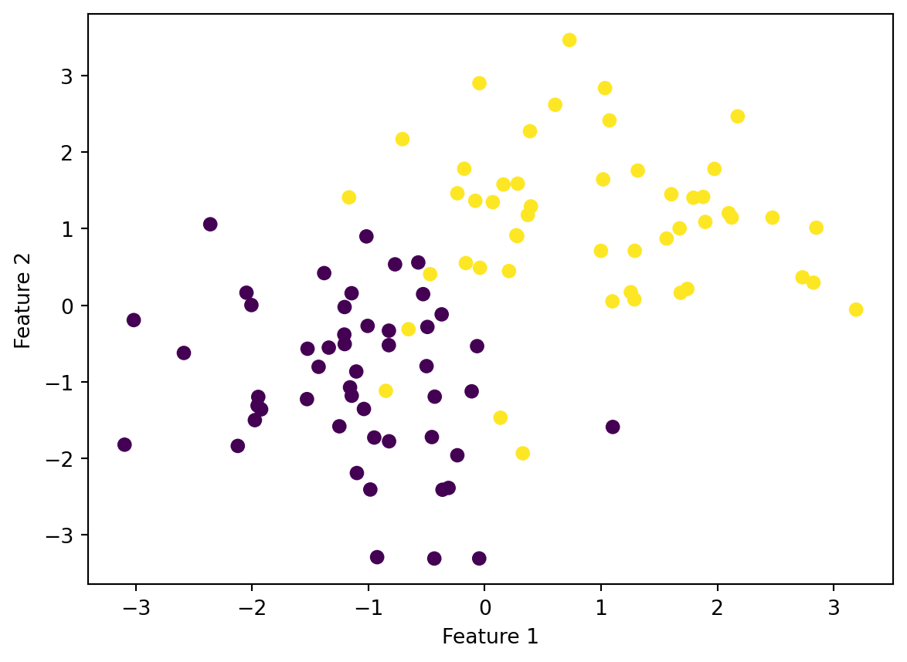
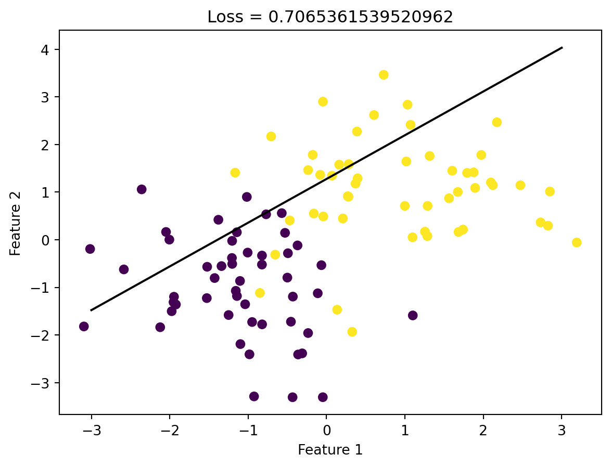
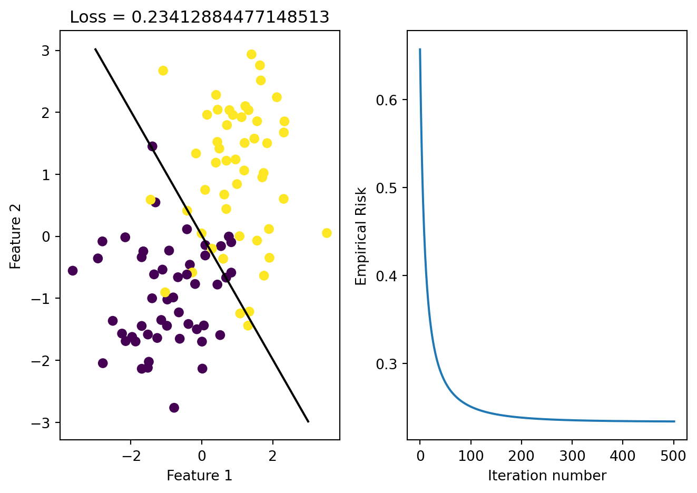

import numpy as np
from scipy.optimize import minimize
np.seterr(all='ignore')
# add a constant feature to the feature matrix
X_ = np.append(X, np.ones((X.shape[0], 1)), 1)
def predict(X, w):
return X@w
def sigmoid(z):
return 1 / (1 + np.exp(-z))
def logistic_loss(y_hat, y):
return -y*np.log(sigmoid(y_hat)) - (1-y)*np.log(1-sigmoid(y_hat))
def empirical_risk(X, y, loss, w):
y_hat = predict(X, w)
return loss(y_hat, y).mean()Optimization with Gradient Descent
$$
$$
Quick Recap
Last time, we considered the problem of empirical risk minimization with a convex loss function. We assumed that we had data, a pair \((\mathbf{X}, \mathbf{y})\) where
- \(\mathbf{X}\in \mathbb{R}^{n\times p}\) is the feature matrix. There are \(n\) distinct observations, encoded as rows. Each of the \(p\) columns corresponds to a feature: something about each observation that we can measure or infer. Each observation is written \(\mathbf{x}_1, \mathbf{x}_2,\ldots\). \[ \mathbf{X}= \left[\begin{matrix} & - & \mathbf{x}_1 & - &\\ & - & \mathbf{x}_2 & - &\\ & \vdots & \vdots & \vdots &\\ & - & \mathbf{x}_{n} & - &\end{matrix}\right] \]
- \(\mathbf{y}\in \mathbb{R}^{n}\) is the target vector. The target vector gives a label, value, or outcome for each observation.
Using this data, we defined the empirical risk minimization problem, which had the general form \[ \hat{\mathbf{w}} = \mathop{\mathrm{arg\,min}}_{\mathbf{w}} \; L(\mathbf{w})\;, \tag{1}\] where \[ L(\mathbf{w}) = \frac{1}{n} \sum_{i = 1}^n \ell(f_{\mathbf{w}}(\mathbf{x}_i), y_i)\;. \]
Here, \(f_{\mathbf{w}}:\mathbb{R}^p \rightarrow \mathbb{R}\) is our predictor function, which takes in a feature vector \(\mathbf{x}_i\) and spits out a prediction \(\hat{y}_i\). We are still assuming that \(f_{\mathbf{w}}\) is linear and therefore has the form
\[ f_{\mathbf{w}}(\mathbf{x}) = \langle \mathbf{w}, \mathbf{x} \rangle \tag{2}\]
Originally we considered classifiers of the form \(f_{\mathbf{w}, b}(\mathbf{x}) = \langle \mathbf{w}, \mathbf{x} \rangle - b\), but we can ignore \(b\) for today by using the assumption that the final column of \(\mathbf{x}\) is a column of \(1\)s, just like we did for the perceptron.
The function \(\ell:\mathbb{R}^2 \rightarrow \mathbb{R}\) was our focus last time: this function takes a prediction \(\hat{y}_i\) and a true label \(y_i\) and returns a number that tells you how bad that prediction was. When studying the perceptron, we considered the 0-1 loss:
\[\ell(\hat{y}, y) = 1 - \mathbb{1}[\hat{y}y > 0]\;,\]
Recall that for this version of the 0-1 loss to make sense we needed to assume that \(y\in \{-1, 1\}\), rather than the more standard assumption \(y \in \{0, 1\}\) that we’ll use more frequently in this course.
which is \(0\) if \(\hat{y}\) has the same sign as \(y\) and 1 if \(\hat{y}\) has a different sign from \(y\). At the end of the lecture, we introduced the alternative logistic loss \[ \ell(\hat{y}, y) = -y \log \sigma(\hat{y}) - (1-y)\log (1-\sigma(\hat{y}))\;, \]
where \(\sigma(z) = \frac{1}{1 + e^{-z}}\) is the logistic sigmoid function. Unlike the 0-1 loss, the logistic loss is strictly convex in its first argument. Recall that a strictly convex function \(g:\mathbb{R}^n\rightarrow \mathbb{R}\) is a function that satisfies the strict inequality \[ g(\lambda \mathbf{z}_1 + (1-\lambda)\mathbf{z}_2) < \lambda g( \mathbf{z}_1 ) + (1-\lambda)g(\mathbf{z}_2)\;. \]
for any \(\mathbf{z}_1, \mathbf{z}_2 \in \mathbb{R}^n\) and \(\lambda \in [0,1]\). So, when we say that the logistic loss \(\ell\) is strictly convex in its first argument, what we mean is that
\[ \ell(\lambda \hat{y}_1 + (1-\lambda)\hat{y}_2, y) < \lambda \ell( \hat{y}_1, y) + (1-\lambda)\ell(\hat{y}_2, y) \] for any true label \(y\), possible predictions \(\hat{y}_1, \hat{y}_2\), and number \(\lambda \in [0,1]\).
As we discussed, the important thing about empirical risk minimization with linear predictors and convex loss functions is that, if there is an optimal solution, that solution is unique. Furthermore, any local minimizer of the loss is in fact the (unique) global minimizer. So, we can design algorithms that search for local minima. In this lecture we are going to discuss gradient methods, which are the most common class of optimization algorithms in use today.
Gradients
We’re not going to talk much about what it means for a function to be multivariate differentiable. You can assume that all the functions we will deal with in this class are unless I highlight otherwise. For a more rigorous definition, you should check out a multivariable calculus class.
So, a gradient \(\nabla f(\mathbf{z})\) is a vector of the same dimension as \(\mathbf{z}\). What happens if we combine them? This is where we get to the really important aspects of gradients for practical purposes:
Theorem 1 and Theorem 2 are important because they give us the mechanics of how to solve the empirical risk minimization problem (Equation 1). Here’s our first version:
Convergence for gradient descent can be decided in a few different ways. One approach is to declare convergence when \(\nabla f(\mathbf{z}^{(t)})\) is close to 0. Another way is to declare convergence when the improvement in the function \(f\) is small enough in magnitude.
Sample code:
if np.allclose(grad, np.zeros(len(grad))):
print("converged")
# or
if f(w_new) - f(w_prev) < 1e-6:
print("converged")The following theorem says that gradient descent works if the learning rate is small enough:
Gradient Descent For Empirical Risk Minimization
Suppose that we have a per-observation loss function \(\ell\) that is strictly convex and differentiable. Suppose that we are still dealing with a linear predictor of the form in Equation 2. Then, we know that the empirical risk objective function \(L\) is also strictly convex and differentiable. It follows from Theorem 3 that, if there is a minimizer \(\mathbf{w}^*\) for the empirical risk, then we can find it using gradient descent. To do this, we need to be able to calculate the gradient of the loss function \(L\). Here’s how this looks. Keep in mind that we are differentiating with respect to \(\mathbf{w}\).
\[ \begin{align} \nabla L(\mathbf{w}) &= \nabla \left(\frac{1}{n} \sum_{i = 1}^n \ell(f_{\mathbf{w}}(\mathbf{x}_i), y_i)\right) \\ &= \frac{1}{n} \sum_{i = 1}^n \nabla \ell(f_{\mathbf{w}}(\mathbf{x}_i), y_i) \\ &= \frac{1}{n} \sum_{i = 1}^n \frac{d\ell(\hat{y}_i, y_i)}{d\hat{y}} \nabla f_{\mathbf{w}}(\mathbf{x}_i) \tag{multivariate chain rule} \\ &= \frac{1}{n} \sum_{i = 1}^n \frac{d\ell(\hat{y}_i, y_i)}{d\hat{y}} \mathbf{x}_i \tag{gradient of a linear function} \\ &= \frac{1}{n} \sum_{i = 1}^n \frac{d\ell(\langle \mathbf{w}, \mathbf{x}_i \rangle, y_i)}{d\hat{y}} \mathbf{x}_i \tag{$\hat{y}_i = \langle \mathbf{w}, \mathbf{x}_i \rangle$} \\ \end{align} \]
The good news here is that for linear models, we don’t actually need to be able to compute more gradients: we just need to be able to compute derivatives of the form \(\frac{d\ell(\hat{y}_i, y_i)}{d\hat{y}}\) and then plug in \(\hat{y}_i = \langle \mathbf{w}, \mathbf{x}_i \rangle\).
Let’s do an example with the logistic loss:
\[\ell(\hat{y}, y) = -y \log \sigma(\hat{y}) - (1-y)\log (1-\sigma(\hat{y}))\;.\]
A useful fact to know about the logistic sigmoid function \(\sigma\) is that \(\frac{d\sigma(\hat{y}) }{d\hat{y}} = \sigma(\hat{y}) (1 - \sigma(\hat{y}))\). So, using that and the chain rule, the derivative we need is
\[ \begin{align} \frac{d\ell(\hat{y}, y)}{d\hat{y}} &= -y \frac{1}{\sigma(\hat{y})}\frac{d\sigma(\hat{y}) }{d\hat{y}} - (1-y)\frac{1}{1-\sigma(\hat{y})}\left(- \frac{d\sigma(\hat{y}) }{d\hat{y}}\right) \\ &= -y \frac{1}{\sigma(\hat{y})}\sigma(\hat{y}) (1 - \sigma(\hat{y})) - (1-y)\frac{1}{1-\sigma(\hat{y})}\left(- \sigma(\hat{y}) (1 - \sigma(\hat{y}))\right) \\ &= -y (1 - \sigma(\hat{y})) + (1-y)\sigma(\hat{y}) \\ &= \sigma(\hat{y}) - y\;. \end{align} \] Finally, we need to plug this back in to our empirical risk, obtaining the gradient of the empirical risk for logistic regression:
\[ \begin{align} \nabla L(\mathbf{w}) &= \frac{1}{n} \sum_{i = 1}^n (\sigma(\hat{y}_i) - y_i)\mathbf{x}_i \\ &=\frac{1}{n} \sum_{i = 1}^n (\sigma(\langle \mathbf{w}, \mathbf{x}_i \rangle) - y_i)\mathbf{x}_i\;. \end{align} \]
So, we can do logistic regression by choosing a learning rate and iterating the update \(\mathbf{w}^{(t+1)} \gets \mathbf{w}^{(t)} - \alpha \nabla L(\mathbf{w}^{(t)})\) until convergence.
Let’s see this in action. Here’s a data set:
Code
from matplotlib import pyplot as plt
from sklearn.datasets import make_blobs
p_features = 3
X, y = make_blobs(n_samples = 100, n_features = p_features - 1, centers = [(-1, -1), (1, 1)])
fig = plt.scatter(X[:,0], X[:,1], c = y)
xlab = plt.xlabel("Feature 1")
ylab = plt.ylabel("Feature 2")
The code below is very similar to the code from last time, but I’m going to first transform the feature matrix \(\mathbf{X}\) so that it contains a column of constant features. This is going to make our mathematical life a lot easier.
I’ll start by picking a random parameter vector, visualizing the corresponding line, and computing the loss:
np.random.seed(123)
# pick a random weight vector and calculate the loss
w = .5 - np.random.rand(p_features)
loss = empirical_risk(X_, y, logistic_loss, w)
fig = plt.scatter(X[:,0], X[:,1], c = y)
xlab = plt.xlabel("Feature 1")
ylab = plt.ylabel("Feature 2")
f1 = np.linspace(-3, 3, 101)
p = plt.plot(f1, (w[2] - f1*w[0])/w[1], color = "black")
title = plt.gca().set_title(f"Loss = {loss}")
It can be hard to put these kinds of numbers in context, but this is a pretty poor value of the loss. You could probably guess that considering how bad the classifier line looks.
Now let’s go ahead and use gradient descent to compute a better value of the parameter vector \(\tilde{\mathbf{w}}\). I’ve shown you the main loop of the algorithm, but not the calculation of the gradient. It’ll be up to you to implement the gradient (as well as variations of gradient descent) in an upcoming blog post.
from hidden.logistic import gradient
alpha = .001 # learning rate
done = False # initialize for while loop
prev_loss = np.inf # handy way to start off the loss
history = []
# main loop
while not done:
w -= alpha*gradient(w, X_, y) # gradient step
new_loss = empirical_risk(X_, y, logistic_loss, w) # compute loss
history.append(new_loss)
# check if loss hasn't changed and terminate if so
if np.isclose(new_loss, prev_loss):
done = True
else:
prev_loss = new_lossNow we can visualize the resulting classifier and check the value of the loss that it achieves.
Code
loss = empirical_risk(X_, y, logistic_loss, w)
fig, axarr = plt.subplots(1, 2)
axarr[0].scatter(X[:,0], X[:,1], c = y)
axarr[0].set(xlabel = "Feature 1", ylabel = "Feature 2", title = f"Loss = {loss}")
f1 = np.linspace(-3, 3, 101)
p = axarr[0].plot(f1, (w[2] - f1*w[0])/w[1], color = "black")
axarr[1].plot(history)
axarr[1].set(xlabel = "Iteration number", ylabel = "Empirical Risk")
plt.tight_layout()
That looks better! Note that the data is not linearly separable, but our algorithm still converged to a reasonable solution.
Activity
Consider the function \(f(w_0, w_1) = \sin(w_0w_1)\). You can define this function like this:
import numpy as np
def f(w):
return np.sin(w[0]*w[1])Mathematically, the gradient of this function is
\[\nabla f(w_0, w_1) = (w_1\cos w_0w_1, w_0 \cos w_0w_1)^T.\]
- Implement a simple loop that uses gradient descent to find a minimum of this function.
- You’ll have to choose the learning rate \(\alpha\).
- The
np.cos()function will be useful for programming the gradient. - It’s not the fastest approach, but if you’re not show how to program the gradient you can always first implement it as a list of two floats, and then use
np.array(my_list)to convert it into a numpy array. - You’ll also need to pick a random starting guess.
- Find two initial guesses for the parameter vector \(\mathbf{w}\) such that you get two different final minimizers (this is possible because \(f\) is not convex).
© Phil Chodrow, 2023